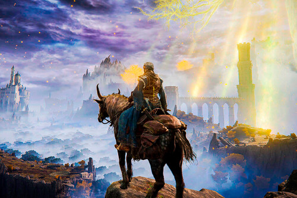

El jugador asume el papel de un Tiznado, un exiliado sin gracia divina que regresa a
las Tierras Intermedias con el objetivo de reclamar los fragmentos del Círculo
de Elden, derrotar a los semidioses y convertirse en el Señor del Círculo.
CLP$ 38.499